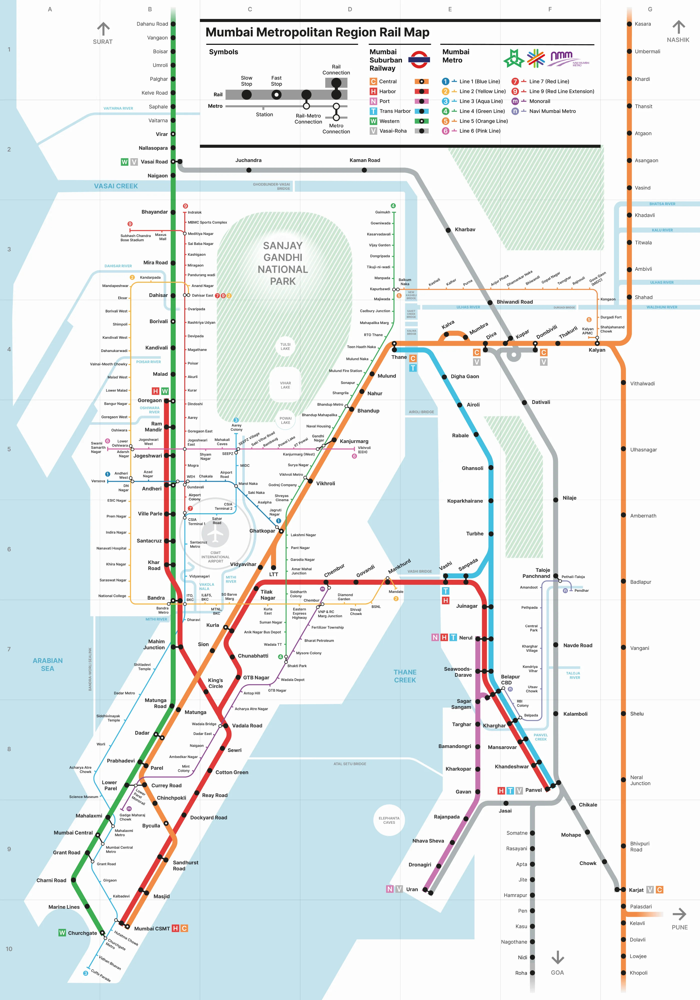

Network View
Mumbai Transport Map
Use this map to understand how Mumbai Local routes and metro corridors connect across the city.
Network View
Use this map to understand how Mumbai Local routes and metro corridors connect across the city.
